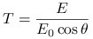
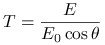

Calculate transmission / reflectivity instead of absolute quantities. For irradiances / actinic fluxes the transmission T is defined as
| (1) |
where  is the irradiance / actinic flux,
is the irradiance / actinic flux,  is the extraterrestrial flux,
and  is the solar zenith angle.
The reflectivity R is defined as
is the extraterrestrial flux,
and  is the solar zenith angle.
The reflectivity R is defined as
| (2) |
where  is the radiance,
is the radiance,  is the extraterrestrial flux,
and is the solar zenith angle.
Obviously, reflectivities do not depend on Sun-Earth distance. Please
note the difference to transmittance.
is the extraterrestrial flux,
and is the solar zenith angle.
Obviously, reflectivities do not depend on Sun-Earth distance. Please
note the difference to transmittance.